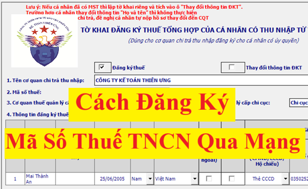
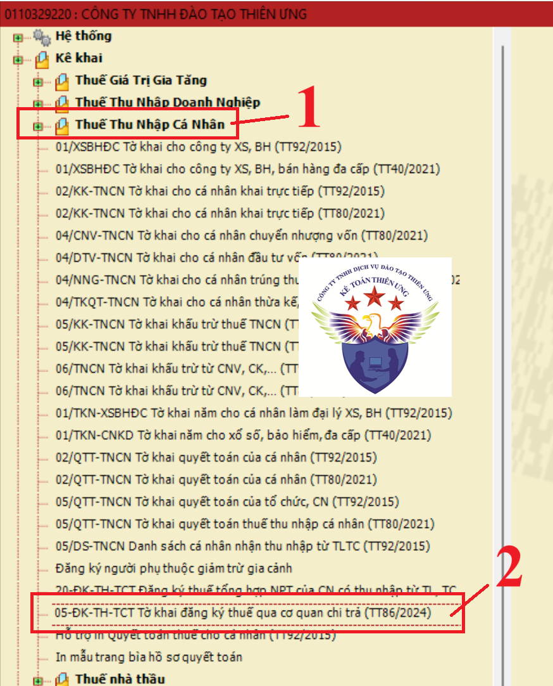
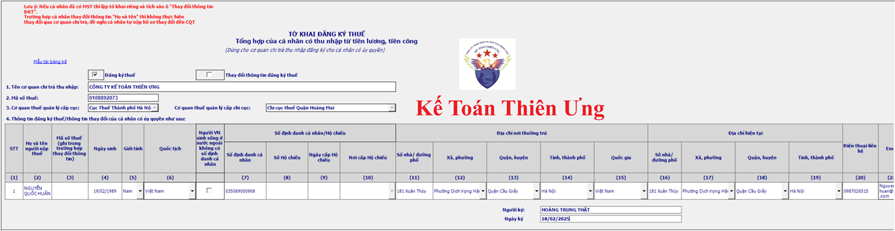
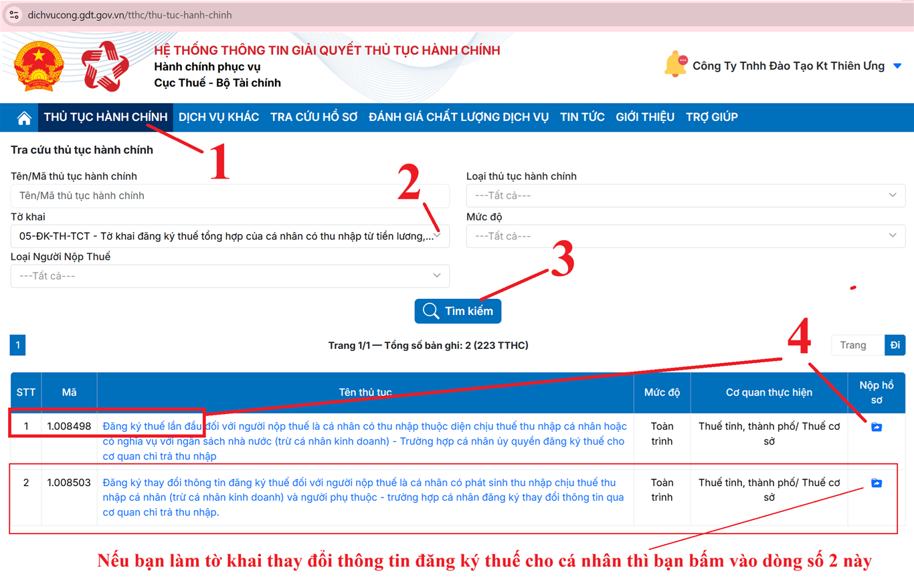
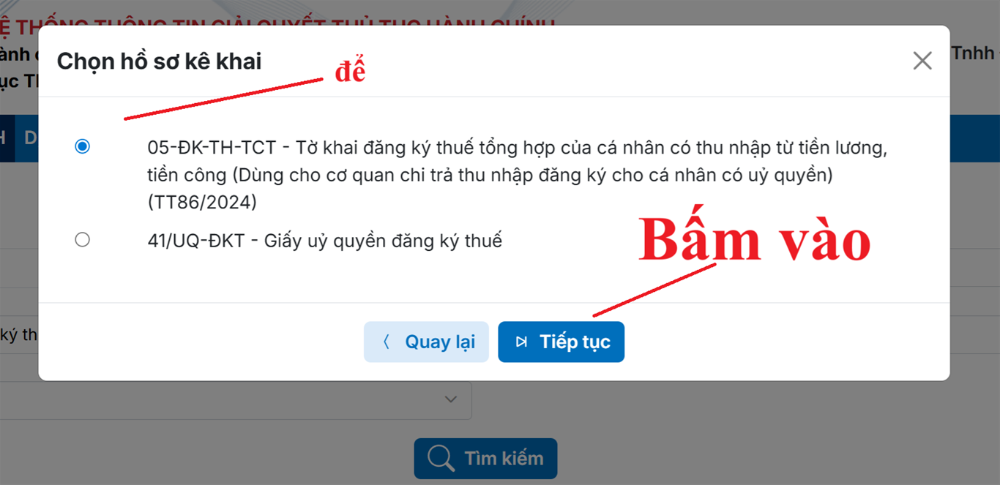
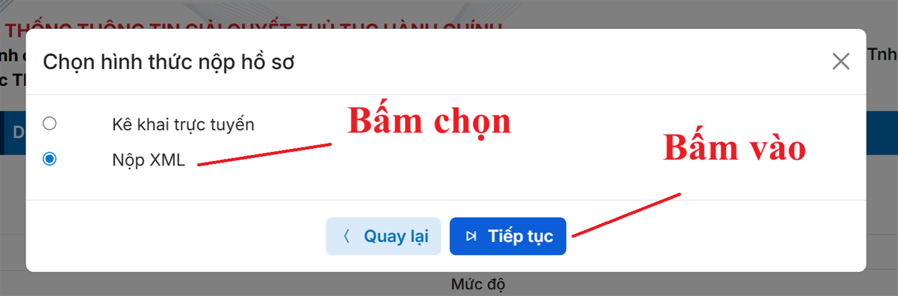
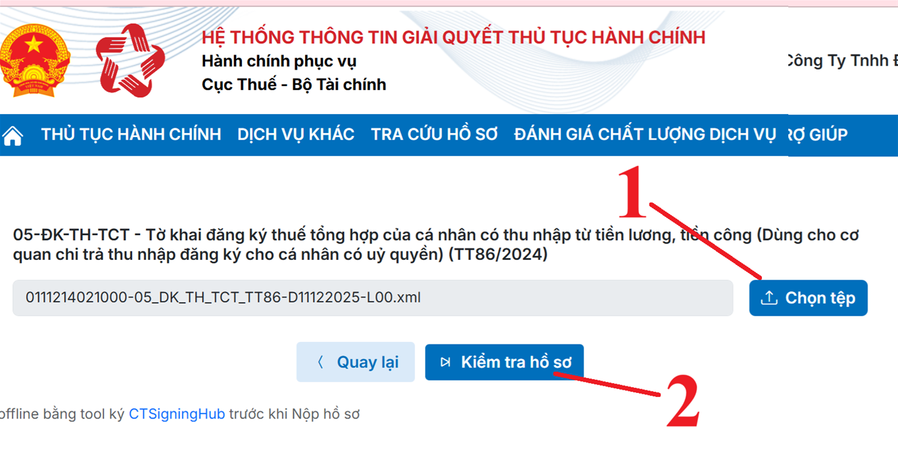
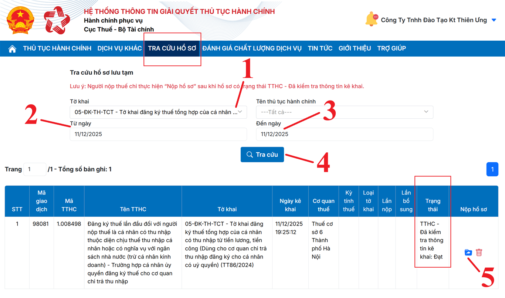
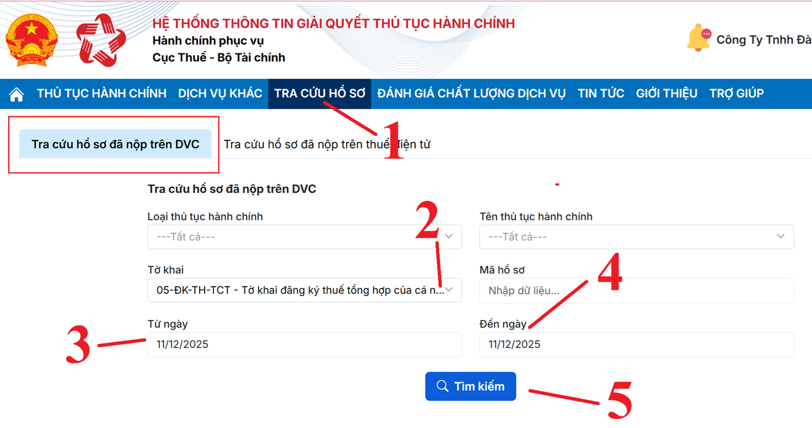

Hướng dẫn cách đăng ký mã số thuế thu nhập cá nhân trên trang dichvucong.gdt.gov.vn mới nhất hiện nay
1. Các thông tin mà bạn cần biết về mã số thuế thu nhập cá nhân từ ngày 01/07/2025 trở đi:
Từ ngày 01/07/2025, Số định danh cá nhân được sử dụng thay cho mã số thuế cá nhân
Số định danh cá nhân của công dân Việt Nam do Bộ Công an cấp theo quy định của pháp luật về căn cước là dãy số tự nhiên gồm 12 chữ số được sử dụng thay cho mã số thuế của người nộp thuế là cá nhân, người phụ thuộc quy định tại điểm k, l, n khoản 2 Điều 4 Thông tư 86/2024/TT-BTC; đồng thời, số định danh cá nhân của người đại diện hộ gia đình, đại diện hộ kinh doanh, cá nhân kinh doanh cũng được sử dụng thay cho mã số thuế của hộ gia đình, hộ kinh doanh, cá nhân kinh doanh đó.
Nhưng số đinh danh (12 số trên CCCD đó) phải được đăng ký thì mới được coi là mã số thuế thu nhập cá nhân
Các trường hợp xảy ra liên quan đến MST TNCN như sau:

2. Tổng quan về đăng ký mã số thuế thu nhập cá nhân:
Đối tượng nào phải đăng ký MST TNCN?
Thời hạn đăng ký MST TNCN:
- Đối với Doanh nghiệp thì: Doanh nghiệp có trách nhiệm đăng ký thuế thay cho cá nhân có thu nhập chậm nhất là 10 ngày làm việc kể từ ngày phát sinh nghĩa vụ thuế trong trường hợp cá nhân chưa có mã số thuế.
- Đối với cá nhân thì: Cá nhân đăng ký thuế trực tiếp với cơ quan thuế thì thời hạn đăng ký thuế là 10 ngày làm việc kể từ ngày sau đây:
+ Phát sinh yêu cầu được hoàn thuế;
Nếu không ký Mã số thuế TNCN hoặc đăng ký chậm thì sẽ bị xử phạt vi phạm như nào?
Theo điều 10 của Nghị định 125/2020/NĐ-CP quy định về mức phạt vi phạm chậm nộp hồ sơ đăng ký thuế và được sửa đổi bởi Điểm b Khoản 8 Điều 1 Nghị định 310/2025/NĐ-CP có hiệu lực từ ngày 16/01/2026 thì Mức phạt tùy theo thời gian chậm nộp như sau:
Mã số thuế TNCN dùng vào những việc gì?
+ Cá nhân được cấp MST sẽ dùng MST đó để kê khai, nộp thuế, hoàn thuế thu nhập cá nhân
+ Một số thủ tục hành chính bắt buộc phải có MST TNCN như: Làm cam kết thu nhập thấp, làm ủy quyền quyết toán thuế TNCN, đăng ký người phụ thuộc để tính giảm trừ gia cảnh khi tính thuế TNCN, kê khai thuế, hoàn thuế... Đều phải đã có MST TNCN rồi thì mới thực hiện được
Có những cách nào để đăng ký MST TNCN?
3. Cách đăng ký thuế cho cá nhân chưa có mã số thuế thu nhập cá nhân (chưa được cấp mã số thuế):
Lưu ý: Việc đăng ký thuế chỉ dành cho cá nhân chưa từng đăng ký thuế (Chưa có MST TNCN)
Làm thế nào để biết cá nhân đó đã có mã số thuế hay chưa? hay số định danh (CCCD 12 số) đó đã được đăng ký thuế hay chưa?
Để trả lời được câu hỏi này thì các bạn phải tiến hành tra cứu mã số thuế thu nhập cá nhân tại trang web https://tracuunnt.gdt.gov.vn/tcnnt/mstcn.jsp hoặc trên trang web https://canhantmdt.gdt.gov.vn/
Chi tiết các bạn xem tại đây nhé: Cách tra cứu mã số thuế TNCN
Trình tự thủ tục và hồ sơ đăng ký thuế trong từng trường hợp như sau:
3.1. Trường Hợp Cá nhân Tự Đăng ký Trực Tiếp Với Cơ Quan Thuế:
(Không ủy quyền cho cơ quan chi trả thu nhập đăng ký thuế)
Thực hiện theo quy định tại điểm c khoản 1, điều 22 của Thông tư 86/2024/TT-BTC như sau:
- Hồ sơ đăng ký thuế: Tờ khai đăng ký thuế mẫu số 05-ĐK-TCT ban hành kèm theo Thông tư 86/2024/TT-BTC.
Để xem và tải Mẫu 05-ĐK-TCT - Tờ khai đăng ký thuế thì các bạn xem tại đây nhé: Mẫu 05-ĐK-TCT tờ khai đăng ký thuế theo thông tư 86/2024/TT-BTC
- Địa điểm nộp hồ sơ: nộp cho Chi cục Thuế, Chi cục Thuế khu vực nơi cá nhân cư trú
+ Đối với cá nhân cư trú có thu nhập từ tiền lương, tiền công do các tổ chức Quốc tế, Đại sứ quán, Lãnh sự quán tại Việt Nam chi trả nhưng tổ chức này chưa thực hiện khấu trừ thuế thì nộp hồ sơ tại Cục Thuế nơi cá nhân làm việc
+ Còn đối với cá nhân có thu nhập từ tiền lương, tiền công do các tổ chức, cá nhân trà từ nước ngoài thì nộp hồ sơ tại Cục Thuế nơi phát sinh công việc tại Việt Nam
3.2. Trường Hợp Cá Nhân Uỷ Quyền Cho Cơ Quan Chi Trả Thu Nhập (Doanh nghiệp) Đăng Ký
Thực hiện theo quy định tại điểm b khoản 1, điều 22 của Thông tư 86/2024/TT-BTC như sau:
+ Bước 1: Cá nhân (người lao động) làm hồ sơ đăng ký thuế của cá nhân
Văn bản ủy quyền Mẫu số 41/UQ-ĐKT ban hành kèm theo Thông tư 86/2024/TT-BTC.
Để xem và tải Mẫu 41/UQ-ĐKT - Văn bản ủy quyền đăng ký thuế thì các bạn xem tại đây nhé: Mẫu giấy ủy quyền đăng ký thuế - Mẫu số: 41/UQ-ĐKT theo TT 86
=> Rồi nộp cho doanh nghiệp (cơ quan chi trả thu nhập)
Lưu ý: Đối với trường hợp cá nhân NLĐ có thu nhập tại nhiều nơi
+ Nếu cá nhân NLĐ chưa đăng ký thuế (chưa có MST TNCN) thì chỉ uỷ quyền đăng ký thuế tại một nơi thôi và thông báo số định danh cá nhân của mình cho các nơi khác để sử dụng vào việc khấu trừ, kê khai, nộp thuế.
+ Nếu cá nhân NLĐ đã đăng ký thuế ((đã có MST TNCN rồi) thì không phải đăng ký nữa => Cá nhân NLĐ cung cấp số định danh cá nhân cho các nơi phát sinh thu nhập để sử dụng vào việc khấu trừ, kê khai, nộp thuế.
Ví dụ: Tháng 2/2025, Anh Minh Phúcình đã ủy quyền cho công ty Diệu Tâm đăng ký MST TNCN => Đã được cấp MST TNCN rồi => Tháng 8/2025, anh Bình nghỉ việc ở công ty Diệu Tâm -> sang làm việc tại công ty Minh Long => Thì tại công ty Minh Long, anh Bình chỉ cần cung cấp số định danh cá nhân của mình cho công ty Minh Long sử dụng vào việc khấu trừ, kê khai, nộp thuế thôi (Anh Minh Phúcình không ủy quyền cho công ty Minh Long đăng ký thuế nữa)
+ Bước 2: Doanh nghiệp có trách nhiệm tổng hợp thông tin đăng ký thuế của cá nhân vào tờ khai đăng ký thuế mẫu số 05-ĐK-TH-TCT ban hành kèm theo Thông tư 86/2024/TT-BTC => gửi cơ quan thuế quản lý trực tiếp cơ quan chi trả thu nhập.
Để xem và tải Mẫu 05-ĐK-TH-TCT - Tờ khai đăng ký thuế thì các bạn xem tại đây nhé: Mẫu 05-ĐK-TH-TCT theo thông tư 86/2024/TT-BTC
Rồi nộp cho cơ quan thuế quản lý trực tiếp cơ quan chi trả thu nhập.
Sau khi đăng ký thuế thành công thì doanh nghiệp sử dụng số định danh cá nhân của cá nhân vào việc khấu trừ, kê khai, nộp thuế theo quy định của pháp luật.
Cách đăng ký mã số thuế thu nhập cá nhân qua mạng:
Cách 1: Doanh nghiệp làm tờ khai đăng ký thuế trên phần mềm HTKK => Kết xuất XML => Rồi nộp tờ khai qua mạng trên trang https://dichvucong.gdt.gov.vn/
Cách 2: Doanh nghiệp làm tờ khai đăng ký thuế trực tuyến (Làm tờ khai trực tiếp) trên trang https://dichvucong.gdt.gov.vn/ rồi nộp tờ khai qua mạng trên trang này luôn
Quy trình thực hiện làm tờ khai đăng ký thuế và nộp qua mạng theo từng cách như sau:
Cách 1. Làm tờ khai đăng ký MST TNCN trên phần mềm HTKK
Bước 1: Đăng nhập vào phần mềm HTTK bằng MST của doanh nghiệp muốn kê khai

Bước 2: Lựa chọn tờ khai:
- Chọn Mục “Thuế Thu Nhập Cá Nhân”
- Chọn tờ khai: chọn dòng “05-ĐK-TH-TCT Tờ khai đăng ký thuế qua cơ quan chi trả (TT86/2024)”
Bước 3: Chọn kỳ tính thuế
Phần mềm HTTK tự động hiển thị theo ngày tháng trên máy tính => Phần mềm cho phép sửa lại ngày tháng năm (nếu muốn)
=> Chọn xong thông tin về kỳ tính thuế thì bấm vào “Đồng ý” để vào giao diện của tờ khai
Bước 4: Làm tờ khai đăng ký thuế - Mẫu 05-ĐK-TH-TCT
Căn cứ vào giấy ủy quyền và các giấy tờ của cá nhân đã nộp cho doanh nghiệp để kê khai thông tin vào tờ khai đăng ký thuế

Lưu ý phần lựa chọn thông tin: “Đăng ký thuế” hay “Thay đổi thông tin đăng ký thuế"
Doanh nghiệp chỉ tích vào 1 trong 2 chỉ tiêu “Đăng ký thuế” hoặc “Thay đổi thông tin đăng ký thuế” tương ứng với hồ sơ của cá nhân ủy quyền là hồ sơ đăng ký thuế lần đầu hoặc hồ sơ thay đổi thông tin đăng ký thuế.
Bước 5: Kết xuất tờ khai đăng ký thuế dạng XML để nộp qua mạng
Bước 6: Nộp tờ khai XML từ HTTK qua mạng trên trang https://dichvucong.gdt.gov.vn
Bước 1: Truy cập vào trang https://dichvucong.gdt.gov.vn/
(2) Đối tượng đăng nhập: chọn “Doanh nghiệp”
(3) Rồi thực hiện: nhập tên tài khoản và mật khẩu của công ty bạn vào hệ thống
(4) Nhập Mã captcha
(5) Bấm vào “Đăng nhập” để đăng nhập vào HỆ THỐNG THÔNG TIN GIẢI QUYẾT THỦ TỤC HÀNH CHÍNH

Lưu ý:
+ Nếu cá nhân NLĐ đã có MST TNCN rồi thì bạn chọn vào dòng 2 để đăng ký thay đổi thông tin đăng ký thuế cho cá nhân đó
Bước 4. Chọn hồ sơ kê khai

Bước 5. Chọn hình thức nộp hồ sơ
Sau khi bạn bấm vào "Tiếp tục" thì hệ thống sẽ hiện thị ra bảng chọn hình thức nộp hồ sơ:

Lưu ý:
+ Nếu bạn chưa làm tờ khai trên phần mềm HTKK -> Chưa có sẵn tờ khai đăng ký thuế dạng XML thì bạn để tích chọn tại dòng "Kê khai trực tuyến" để hệ thống hiện thị ra tờ khai để bạn tiến hành kê khai trực tiếp trên trang Dịch vụ công này
+ Còn nếu bạn đã làm tờ khai đăng ký thuế trên phần mềm HTKK rồi => Đã kết xuất tờ khai dạng XML sẵn rồi thì bạn sẽ bấm chọn xuống dòng "Nộp XML" như trong hình trên để lát nữa tải tờ khai dạng XML từ máy tính của các bạn lên hệ thống

Sau khi bạn bấm vào “Kiểm tra hồ sơ” thì màn hình sẽ hiện thị ra:
.png "Bấm vào tra cứu hồ sơ lưu tạm")
Tại đây bạn bấm vào ô "Tra cứu hồ sơ lưu tạm" thì màn hình sẽ hiện thị ra màn hình tra cứu để bạn chọn thông tin cần tra cứu:

Lưu ý: Doanh nghiệp chỉ thực hiện bấm vào “Nộp hồ sơ” sau khi hồ sơ có trạng thái là "TTHC - Đã kiểm tra thông tin kê khai"
Nếu bạn đã bị đăng xuất tài khoản hoặc lúc sau bạn đăng nhập lại thì đường dẫn để bạn tra cứu hồ sơ lưu tạm như sau:
Đăng nhập vào hệ thống dịch vụ công => Bấm vào chức năng "TRA CỨU HỒ SƠ" rồi chọn dòng "TRA CỨU HỒ SƠ LƯU TẠM"
.png "Mở đường dẫn để tra cứu hồ sơ lưu tạm")
Rồi sau đó bạn tiến hành chọn các thông tin cần tra cứu tương tự như ở bên trên
Bước 5. Nộp hồ sơ
Sau khi kiểm tra thông tin hồ sơ đã đạt thì hệ thống sẽ hiện thị ra chữ "Nộp hồ sơ" tại cột "Nộp hồ sơ"
=> Bấm vào “Nộp hồ sơ” thì màn hình sẽ hiện thị ra tờ khai
Sau đó bạn bấm vào “Hoàn thành kê khai”
=> Bạn bấm vào “Ký hiện tử và nộp hồ sơ” để tiến hành nhập mã pin -> ký điện tử và nộp hồ sơ qua mạng
Sau khi ký gửi thành công là công việc nộp tờ khai đã ký thuế đã hoàn thành
Để tra cứu chi tiết kết quả cấp mã số thuế thu nhập cá nhân thực hiện như sau:
+ 1 mail đầu là thông báo tiếp nhận hồ sơ đăng ký thuế điện tử
+ Mail thứ 2 là: Gửi kết quả
=> Sau khi nhận được mail thứ 2 thì các bạn kiểm tra kết quả trên thông báo tại mail này để xem việc đăng ký đã thành công hay chưa, có xảy ra lỗi nào hay không

Doanh nghiệp có thể truy cập vào trang web: https://dichvucong.gdt.gov.vn/ Để tra cứu chi tiết kết quả đăng ký NPT như sau:
---------------------------------------------------------------------------
Nếu bạn muốn đăng ký người phụ thuộc thì có thể xem thêm tại đây:
Các bạn muốn tìm hiểu chuyên sâu hơn về thuế TNCN, TNDN... Kỹ năng quyết toán thuế thì có thể có tham gia: Lớp học kế toán thuế thực tế chuyên sâu.